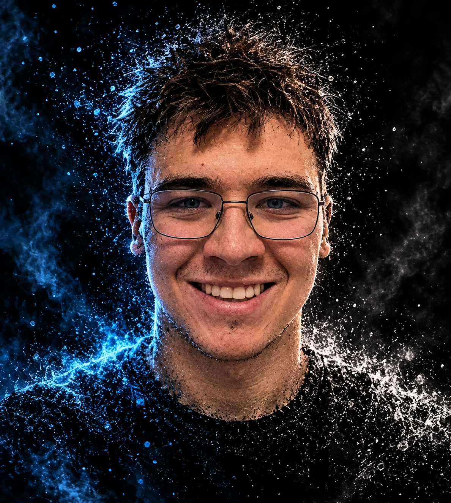

Automation & Robotics → Data → Machine Learning
Witold
Korzeniewski
Robotics engineer turned data analyst, now building toward machine learning. The portrait on this page is generated live in your browser from my signature, the way an image-to-image model turns a sketch into a picture.

next prototype
Projects, delivered by a robot arm
Placeholder for the second scene. Scroll back up to watch the portrait denoise again.